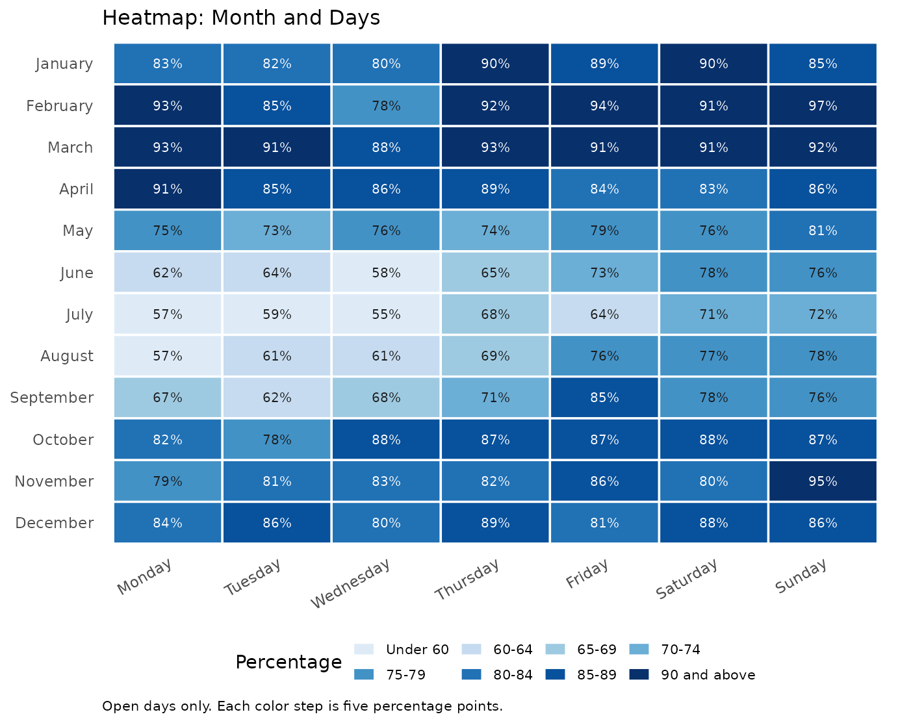

2. Heatmap: Month and Days
Source:vignettes/operational-opportunities.Rmd
operational-opportunities.RmdThis chapter compares season and weekday on the open days, then records two receipt changes. It recommends no rate. It has no forecast, no price elasticity, and no revenue estimate. The weather vignette joins historical weather to these days. Its elasticity section is a separate synthetic exercise and leaves these figures unchanged.
Utilization is golfers divided by the city’s daylight estimate. The city sets that estimate from sunrise to sunset. Golfers per day is the count of people who played. A day above one hundred percent ran past the estimate. Tee-sheet occupancy would require a tee time, and this extract has daily counts.
The rates use the 1,708 days with at least one golfer, from 2021-07-01 through 2026-04-30. A period rate is the sum of golfers divided by the sum of the daylight estimates, the same ratio as the capacity tables. Days with no recorded play are omitted. The October zero-round stretches are in that omission. The city file does not say the course was closed.
Heatmap: Month and Days

Each cell is one month and one weekday. The number in the cell is the utilization percentage, and each color step is five percentage points. June through August are the light band. February and March are the dark band. August, the highest of the light months, is 68.4%. September is 72.4%. May is 76.1%. November is 83.6%. Within a month, the weekend is usually darker than Tuesday and Wednesday. July is 64% and March is 91%. Wednesday is 74% and Sunday is 84%.
Utilization by day
Each panel is one year, with Monday through Sunday across the columns. This is the daily calendar that sat in the right-hand column of the capacity figure. Green is below the median played day, purple is above it, and red is above 100 percent. A zero-round day of unknown status is off that scale.
What the comparison shows
Summer’s lower percentage is a longer daylight estimate. June has 275 golfers per open day, against 272 in February. July has 252 and August has 255. Those months sit above December (231) and January (239), and below March (303) and April (314). The extract has daily counts, so that lower percentage is the longer daylight estimate.
Realized green-fee yield is green-fee revenue divided by played rounds. February and March are about $46 to $48 per golfer. June through August are about $16 to $19. The extract has no posted rate and no rate code in this comparison, so the gap stays a receipt per played round.
In 2022, 2023, and 2024 the receipt per recorded cart is $16.00. Carts per golfer run from 0.78 to 0.80. In 2025 the receipt is $10.57 and carts per golfer are 0.42. Total dollars per golfer move from $99.41 to $101.99. The city catalog derives the cart count from cart revenue, so the 2025 cart series follows that derivation. From January through April 2026, cart dollars per golfer are $4.09.
Range dollars per golfer are $11.63 in 2022 and $27.13 in 2025. The correlation with daily golfers is 0.20 and 0.09. Both correlations are weak. The rise in dollars per golfer stands as a receipt change.